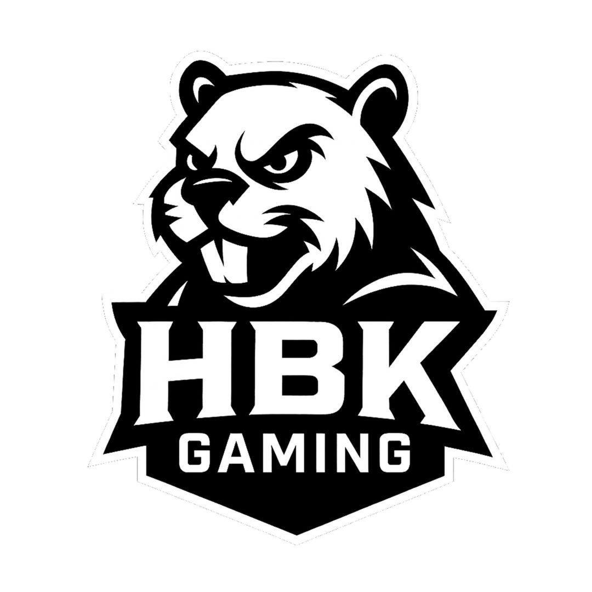
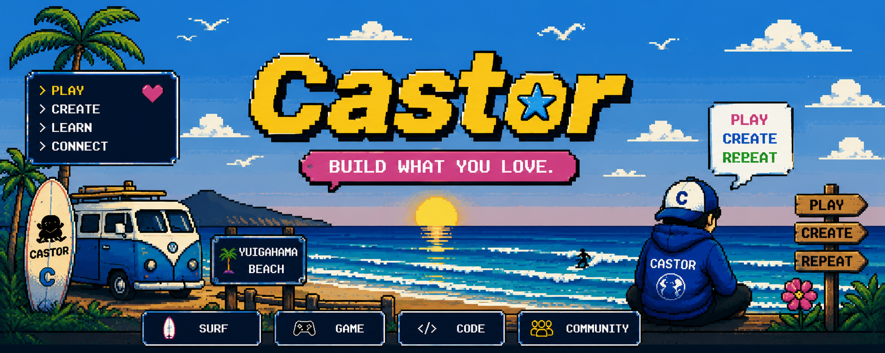
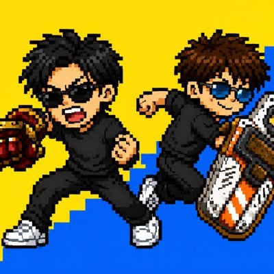

01 / ABOUT CASTOR
PLAY. CREATE. REPEAT.
CASTORは、遊びと学びをつなぐクリエイティブレーベル。親子でゲームを楽しみ、つくり、そして発信しています。

好きだから、
つくってみる。
ゲームを遊ぶ。動画を撮る。思いついたら、今度は自分たちでも作ってみる。
CASTORは、そんな「やってみたい」を集めていく場所です。
- 遊ぶ / PLAY
- つくる / CREATE
- 学ぶ / LEARN
- つながる / CONNECT
03 / FIRST RELEASE
CASTOR KANJI QUEST
CASTORから生まれた最初のゲーム。まずはここから。

ゲームで、
漢字を覚える。
小学1年生の漢字の「読み」を、RPG風のバトルで練習。3択から答えを選び、モンスターを倒しながら進みます。
小学1年生3択RPG風WEB GAME
▶ CASTOR KANJI QUESTをプレイCASTOR SYSTEM ONLINE
PLAY. CREATE. REPEAT.
PLAY. CREATE. REPEAT.